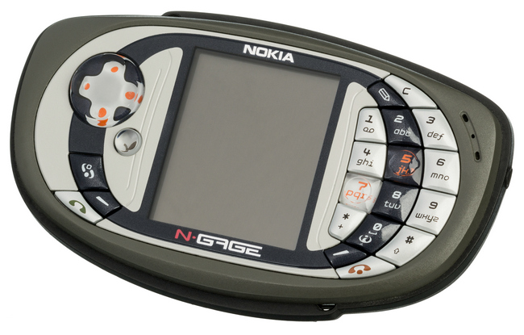

интернет-магазин гаджетов, где легко совершить выгодные покупки по разумным ценам. Высокое качество товаров и сервиса гарантируется!
Всё просто! У нас выгодно покупать: мы отслеживаем рынок цен и стараемся делать выгодные предложения. Наши сотрудники — это специалисты с большим опытом работы, которые ответят на все вопросы, связанные с выбором любого товара из нашего каталога. Мы заботимся о том, чтобы каждый покупатель смог найти товар, который лучше всего отвечает его потребностям и финансовым возможностям.
На главную
Размеры N-Gage QD составляют 118x68x22 мм, то есть корпус уже и ниже, чем у оригинала, но немного толще (133.7x69.7x20.2 мм – таковы габариты оригинальной Nokia N-Gage). Вес незначительно увеличился (143 г против 137 г), это больше чем средний вес телефона, такая масса характерна для КПК и смартфонов. Во время тестирования устройство перемещалось в переднем кармане джинсов вместе с основным телефоном, устройство ощущалось, но дискомфорта не было. Расскажем об удобстве использования телефонных функций в N-Gage QD. Динамик расположен на лицевой части игрофона – разговаривать можно традиционным способом, а не прикладывать телефон торцом к уху, смущая окружающих, как в первой N-Gage. Со стороны разговор человека по N-Gage QD не вызывает удивления или интереса, в глаза не бросается. Набирать SMS одной рукой реально, но не удобно – левая часть при таком способе перевешивает, это же относится и к набору номера. В общем, удобнее всего работать с устройством, держа его в обеих руках (неизбежные издержки вертикальной ориентации устройства). Цифровая клавиатура – пластиковые клавиши с глянцевой поверхностью. Игровые клавиши «5» и «7» прозрачны, также как и джойстик. Все они имеют достаточный ход и четкий отклик при нажатии. И клавиши и четырехпозиционный джойстик показали себя с лучшей стороны в играх, за две недели использования устройства к ним не возникло ни одной претензии. Дата выхода на рынок 2004 г. Операционная система: Symbian OS 6.1 (S60, 1st Edition) Разрешение экрана:176x208 Флэш-память 3.4 Мб Поддержка карт памяти MMC
Cпециально для людей, ведущих активный образ жизни, компанией Ericsson выпущен влагопылезащищенный и ударопрочный аппарат Ericsson R310s. Телефон не боится падений и ударов (конечно, в разумных пределах), нет особой необходимости беречь его от дождевых капель или морских брызг. Повышенное внимание к защитным функциям корпуса не помешало сделать сам аппарат достаточно умным: R310s может похвастаться целым набором интересных и нужных функций – начиная от калькулятора и заканчивая голосовым набором. R310s останется на связи даже в условиях, непригодных для других сотовых телефонов. Ширина-53 мм, Высота-131 мм, Толщина-25 мм, Вес-170 г., что еще нужно?
Телефон привлекает внимание двумя вещами: во-первых, своим меню, а во-вторых — дизайном. Начнем со второго. С одной стороны, телефон, по сегодняшним меркам, не очень маленький (113?44?21мм), с другой стороны, его вес — всего 92 грамма. Сейчас это один из самых легких телефонов ценой менее 150$. Вообще, аппарат неплохо сбалансирован: он без труда помещается в кармане рубашки, совсем чуть-чуть оттопыривая его, при этом, когда держишь телефон в руке, он в ней не «утопает», а смотрится как-то даже солидно. Нельзя сказать, что дизайн данной модели отличается чем-то экстраординарным, но с расстояния двух-трех метров телефон смотрится очень симпатично. А уж если взять J70 в руки, то не влюбиться в него с первого «касания» довольно проблематично :-). Весь корпус телефона и кнопки пластмассовые. Но, что интересно, телефон при этом не кажется дешевым. Иногда пластмассовые кнопки очень сильно портят субъективное впечатление от общения с аппаратом. Так, например, дело обстоит с Motorola V70: сам телефон стоит больших денег, но после пары минут общения с ним не каждый сможет с уверенностью сказать, что это была модель стоимостью более пяти сотен долларов. С Sony CMD-J70 не все так «запущенно». Кнопки всегда нажимаются легко, аккуратно и мягко. Сами по себе они не маленькие, как во многих новых аппаратах: набрать номер «вслепую» не так уж и сложно даже неопытному пользователю.
Классика, добавить нечего
Siemens C65 – стильный мобильный телефон, обладающий широкими мультимедийными возможностями. Благодаря встроенной цифровой камере, телефон позволяет сохранять памятные моменты и интересные события. С помощью Siemens C65 можно комфортно путешествовать по сети Интернет, а также загружать свежие мелодии вызова, заставки и картинки. Широкий спектр дополнительных аксессуаров позволяет более продуктивно использовать телефон. Ширина 45 мм Высота 105 мм Толщина 16 мм Вес 86 г